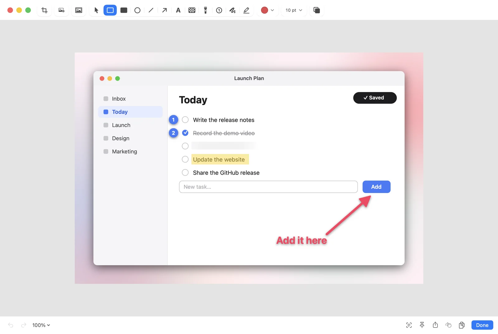
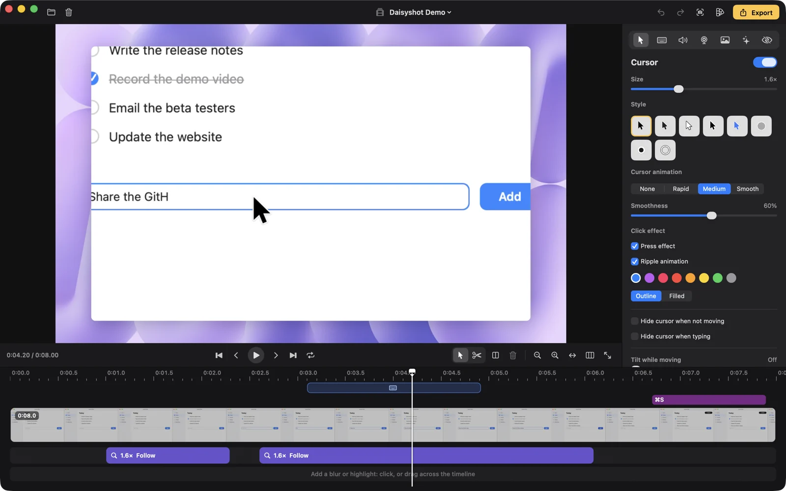
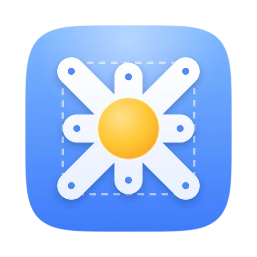

Scrolling capture
Capture a whole page, chat or document as one tall image. It can scroll for you.
Free & open source · Works fully offline
Screenshots, screen recordings and polished screen videos — in one small, native Mac app that lives in your menu bar.
✛ Psst — drag anywhere up here to take a screenshot.
01Screenshots
An area, a window, the full screen, the same area again, a whole scrolling page. Then point at what matters.

On-device
Daisyshot reads the text in your screenshot and covers only the value, so the label next to it stays readable. It all runs on your Mac with Apple's Vision.
Keys for the production workspace
Capture a whole page, chat or document as one tall image. It can scroll for you.
Invoice no. DS-2026-0114
Total due $1,280.00
Drag over a video, an image or a locked PDF and the text is on your clipboard.
Read a QR code straight off the screen. No phone needed.
Keep a reference floating above every window while you work.
Set up a menu or a hover state, then let the countdown take the shot.
Every shot lands in a small card. Hover it and press a key, or drag it straight into another app.
Everything you captured, searchable. Closed a card by mistake? Bring it back.
02Studio
A raw screen recording. Flat, cramped, hard to follow.
macOS wallpapers, gradients or your own image, with rounded corners.
Placed for you where the action is, and editable on the timeline.
Shaky mouse paths become glides, with click effects and motion blur.
Shortcuts appear as you press them, so viewers can follow along.
Typing stretches are found for you. Speed them up in one click.
Put your face in the corner, or switch to camera-only for a moment.
Fill the frame and follow the cursor for 9:16, 1:1 or 4:5, queued after the main video.

Cut, trim, split and speed up clips. Move a zoom, stretch it, or delete it.
Blur and highlight masks locate sensitive text in the recording, and warn when it moves.
Background music, noise reduction and loudness normalization, built in.
Save your look once. Export right after recording without opening the editor.
A display, a window, an area, or an iPhone or iPad over USB. Microphone and per-app system audio.
Speaker notes and a teleprompter, click highlights, GIF or MP4, and crash recovery if anything goes wrong.
03Privacy
Nothing leaves your Mac.
Once a day Daisyshot asks GitHub whether there's a newer release. Nothing about you or your files is sent, and you can turn it off. Updates install only if they carry Daisyshot's Ed25519 release signature.
04Keyboard first
# Drive Daisyshot from scripts, launchers and Shortcuts
$ open "daisyshot://capture-area?action=copy"
$ open "daisyshot://capture-text"
$ open "daisyshot://record-screen"
$ open "daisyshot://pin?filepath=~/Desktop/spec.png"Every shortcut can be changed, and the Studio editor has its own remappable set. Other apps need your OK the first time they send a command.
An app that can see your screen should be one you can read. Browse the source ↗ · Support on Ko-fi ↗
